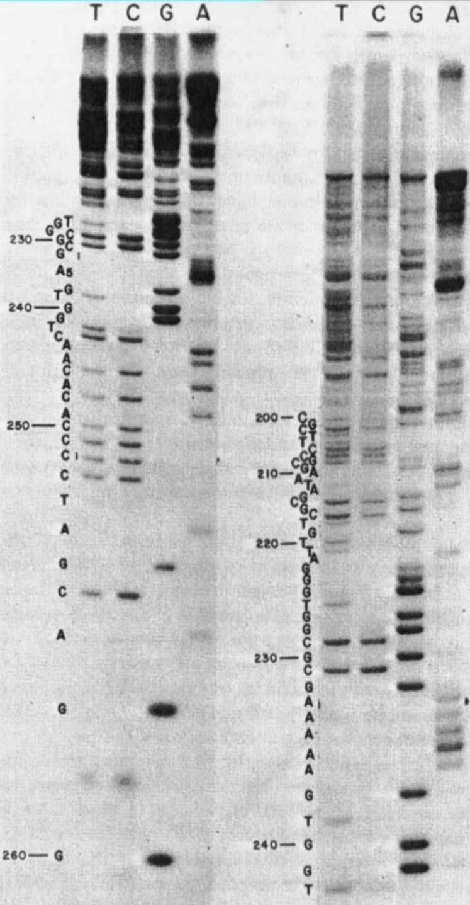
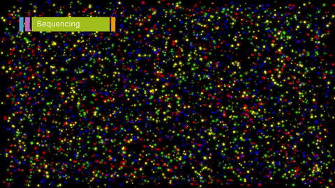
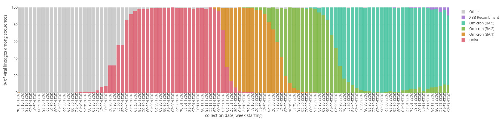
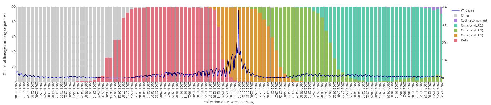
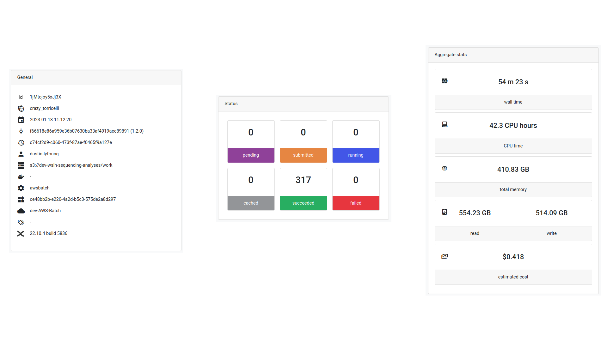
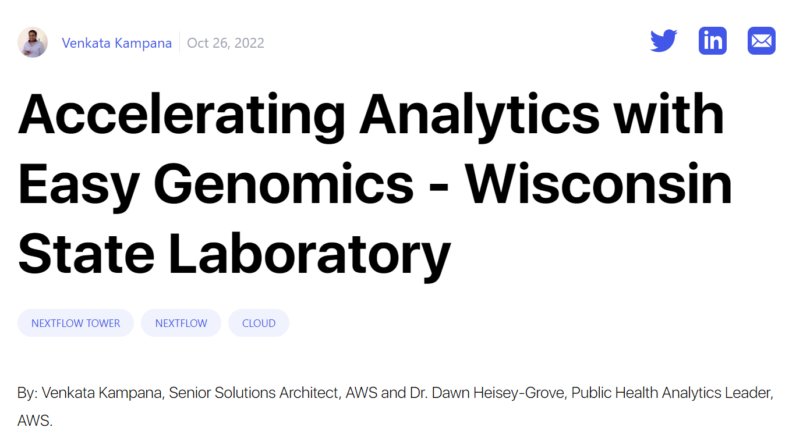

Enhancing Public Health Infectious Disease Genomics through Cloud Computing
Kelsey Florek, PhD, MPH Senior Genomics and Data Scientist Wisconsin State Laboratory of Hygiene February 22, 2023
Supported By

AWS Diagnostic Development Initiative (DDI)
Next Generation Sequencing
What is Next Generation Sequencing?
Sanger Sequencing
Next Generation Sequencing (Illumina)

Increases in data requires advanced analyses (MiSeq)
- 15,000,000,000 ATGC's generated per sequencing run
- 40,000 - 150,000 words in a novel
- average word length in English is 4.79
- one sequencing run would generate 32,963 novels with 95,000 words each
Increases in data requires advanced analyses (Nextseq 2000)
- 360,000,000,000 ATGC's generated per sequencing run
- 40,000 - 150,000 words in a novel
- average word length in English is 4.79
- one sequencing run would generate 791,121 novels with 95,000 words each

Genomics and Public Health Infectious Diseases
Public Health Aspects of Infectious Disease
- Pathogen Surveillance
- pathogen trends
- priority setting
- early warning system
- Outbreak Investigations
- source identification
- risk assessments
- prevent spread
Pathogen Surveillance: SARS-CoV-2
SARS-CoV-2 Wastewater
SARS-CoV-2 Clinical
SARS-CoV-2 Variant Waves in WI
SARS-CoV-2 Variant Waves in WI
Outbreak Investigation:
Drug Resistant Acinetobacter baumannii
Outbreak Initial Case
- Patient at facility A with a lower respiratory infection 3 months after a heart transplant
- Respiratory cultures revealed a carbapenem resistant A. baumannii
- Treatment:
- Polymixin-B
- Meropenem
- Colistin
- Cefiderocol as compassionate treatment
- Patient passed away, unclear if cause was sepsis
- 5 additional patients from Facility A had sputum cultures that were positive for carbapenem resistant A. baumannii
- Wisconsin State Laboratory of Hygiene
Antimicrobial susceptibility
- Amikacin: Resistant
- Aztreonam: Resistant
- Cefepime: Resistant
- Cefotaxime: Resistant
- Ceftazidime: Resistant
- Ciprofloxacin: Resistant
- Colistin: Susceptible
- Doripenem: Resistant
- Doxycycline: Resistant
- Gentamicin: Resistant
- Imipenem: Resistant
- Levofloxacin: Resistant
- Meropenem: Resistant
- Minocycline: Intermediate
- Piperacillin-tazobactam: Resistant
- Polymyxin-B: Susceptible
- Ticarcillin-clavulanate: Resistant
- Tobramycin: Resistant
- Trimethoprim-sulfamethoxazole: Resistant
Case Definitions
Probable
- Carbapenem resistant A. baumannii clinical isolate with outbreak AST profile
Confirmed
- Carbapenem resistant A. baumannii clinical isolate genetically clustering with other outbreak isolates and harboring the OXA-24/40-like β-lactamase OXA-72
Case Definitions
Probable (n=43)
- Carbapenem resistant A. baumannii clinical isolate with outbreak AST profile
Confirmed (n=22)
- Carbapenem resistant A. baumannii clinical isolate genetically clustering with other outbreak isolates and harboring the OXA-24/40-like β-lactamase OXA-72
Summary
- Next Generation Genomic Data is already large and growing with new technology
- Critical reductions in time to result with genomic data to better inform public health policy and interventions
- Infrastructure needs flexibility to adapt to changes in demand with the potential for high demand
- Genomic data is a unique data type that doesn't fit with typical data solutions
Cloud Approaches to Bioinformatics
Managing a growing data infrastructure

Bioinformatics Workflow

Sequencing Analysis Infrastructure

Sequencing Analysis Infrastructure
https://dataportal.slh.wisc.edu/
Easy Genomics
Whats next?
Pathogen Genomic Data Needs Context!
Connect data systems across Public Health
enabling near realtime insights on infectious diseases
enabling near realtime insights on infectious diseases
Sequencing Data Infrastructure